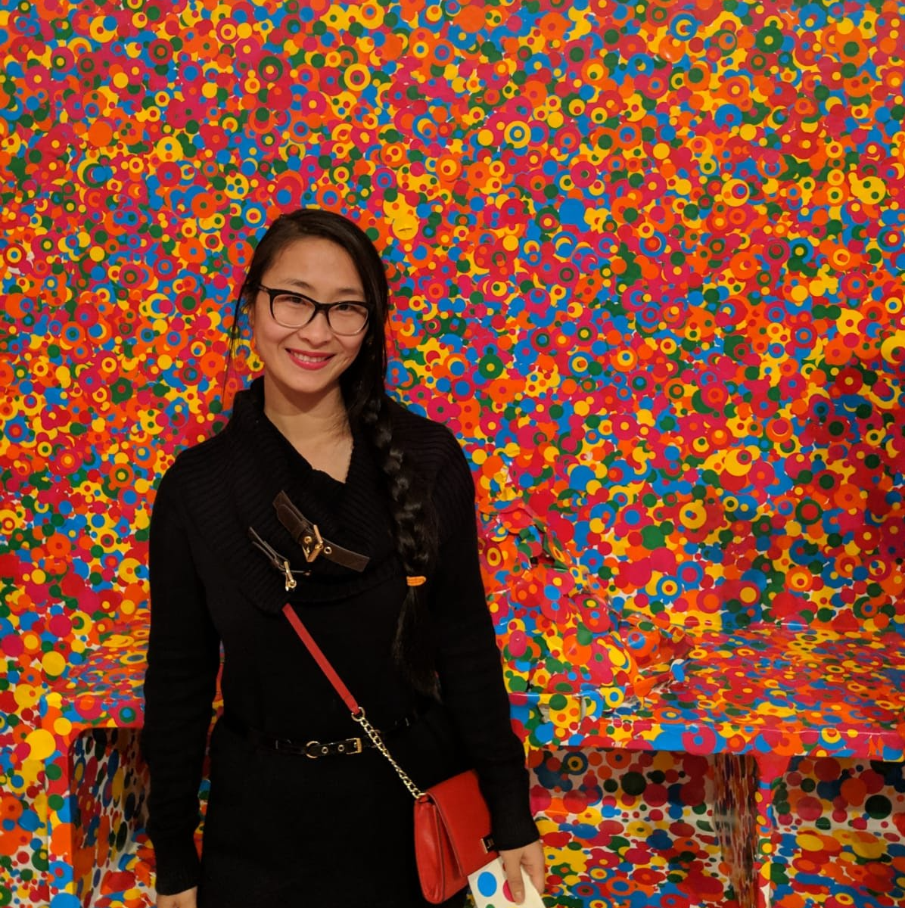

About Me
 Full stack web developer based in Atlanta, Georgia. I'm a trained full stack developer with a background in enterprise applications. With internet changing the world for the better, people's lives are flooded with numerous websites and mobile applications. That is why I believe well designed and developed, smooth and user friendly and intuitive websites are the true game changer. I enjoy to design and develop websites and applications that are fun innovative and make people's life better. No matter if you are an individual who is looking to get a brand new shinny website to boost your career, or small business that want a professional looking website to attract more client. I'd love to help! Besides my passion for the tech world. I love the great outdoors and get my inspiration from this beautiful planet that we all share. So let's work together to make this world a better place.